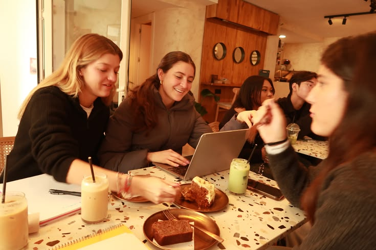

🍜 Где поесть студенту в Перми?
🍜 Where to eat in Perm on a student budget?
Карта вкусных и бюджетных мест рядом с ПНИПУ, проверенных нами лично.
A map of tasty and affordable spots near PNRPU, tested by ourselves.
⭐ Наши фавориты:
⭐ Our favourites:
- «Китайская столовая» (Ленина, 76) – повара из Китая, огромные порции
- «Chinese Canteen» (Lenina, 76) – chefs from China, huge portions
- Кафе «Ларена» (Комсомольский пр., 38) – тунисская шаурма и маклюбе
- Cafe «Larena» (Komsomolsky, 38) – Tunisian shawarma & maklyube
- Хинкальная «Мимино» (Луньевская, 4) – хинкали и хачапури как в Тбилиси
- Khinkalnaya «Mimino» (Lunyevskaya, 4) – khinkali & khachapuri like in Tbilisi
- Столовая «Минутка» (Луначарского, 3А) – самая дружелюбная столовая
- Canteen «Minutka» (Lunacharskogo, 3А) – the friendliest canteen

Топ бюджетных мест рядом с ПНИПУ
Top Budget Places Near PNRPU
Мы, студенты ПНИПУ, собрали для вас проверенные заведения в шаговой доступности от вуза.
We, PNRPU students, have gathered verified spots within walking distance of the university.
Советы по экономии
Money‑Saving Tips
Готовьте сами
Cook yourself
В общежитиях есть кухни – это дешевле и полезнее.
Dormitories have kitchens – cheaper and healthier.
Студенческие скидки
Student discounts
Всегда спрашивайте о скидках по студенческому билету.
Always ask for student discounts with your ID.
Бизнес-ланчи
Business lunches
Комплексные обеды днём часто дешевле, чем отдельные блюда.
Set lunch menus are often cheaper than à la carte.
Бесплатное питание
Free meals
Узнайте в вузе, можете ли вы получать бесплатное питание (льготные категории).
Check if you qualify for free meals (low‑income, large families, etc.).
💰 Ориентировочные цены в Перми
💰 Approximate Prices in Perm
🍽 Обед в недорогом ресторане: 400–1500 ₽
🍽 Lunch at an inexpensive restaurant: 400–1500 RUB
🏫 Средний чек в столовой: 160–300 ₽
🏫 Average bill at a canteen: 160–300 RUB
🛒 Продукты на месяц: ~9 000 – 19 000 ₽
🛒 Monthly groceries: ~9 000 – 19 000 RUB